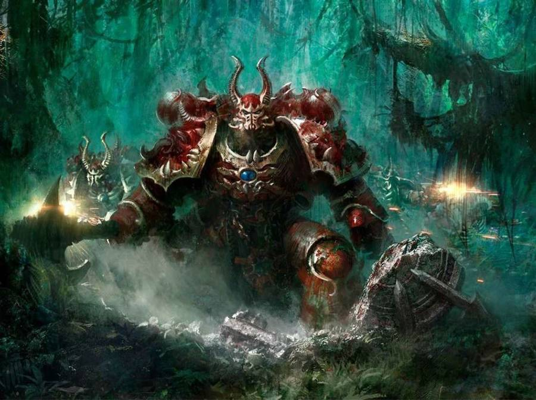

Death world
| Death world | |
|---|---|
| Class of Imperial world | |
 A patrol of Catachan Jungle Fighters in the jungles of their homeworld Artwork © Games Workshop | |
| Administratum class | Death world[a] |
| Typical tithe | Solutio grades, usually paid in soldiers; Aptus Non for Chapter homeworlds |
| Population | Small: thousands to a few million, with rare exceptions such as Endymion Prime |
| Hazards | Predators, toxic flora, extreme climate, radiation, volcanism, disease |
| Recruited by | Astra Militarum; Space Marine Chapters; Adeptus Arbites |
| Related classes | Feral world; Feudal world; Chapter Planet; Jungle world |
| Examples | Catachan, Fenris, Baal Secundus, Nocturne, Krieg, Caliban (destroyed), Pythos, Croatoa |
A death world is a class of planet of the Imperium of Mankind whose environment is so dangerous that an unprepared human is likely to die there within days. The danger may come from vicious predatory wildlife, poisonous or carnivorous plants, extremes of heat or cold, volcanic activity, radiation or disease, and on at least one world, Croatoa, the planet itself is held to be alive. The Administratum records the class to warn travellers and to set the tithe of the world's people, and judges such a planet unfit for widespread human settlement.[1][2]
Death worlds are usually thinly populated, but the people who survive on them are among the hardest in the galaxy. Many have large settlements, kept alive by the resources of the planet, the minerals, plants, animals or gases that the Imperium values enough to maintain a small colony against every danger. More often the reason is the people themselves: the Astra Militarum raises some of its most feared regiments from death worlds, above all the Catachan Jungle Fighters, and several Space Marine Chapters recruit from them, among them the Space Wolves of Fenris, the Blood Angels from Baal Secundus and the Salamanders of Nocturne.[3][4]
The Magi Biologis of the Adeptus Mechanicus have long held a theory about the origin of the class. They propose that many death worlds were seeded by the advance hive fleets of the Tyranids that entered the galaxy in ages past, and left behind when the fleets moved on. The great beasts of the death worlds, the kraken of Fenris and the Catachan devil, share many features with Tyranid organisms. Cut off from the Hive Mind, the argument runs, such creatures degenerated into unintelligent but vicious animals. The theory is not accepted by all, and the Inquisition has not confirmed it.[2][5]
Characteristics
[edit]No single environment defines a death world. Imperial surveys distinguish several kinds, and a world may fall into more than one of them. The jungle worlds, where every plant and animal is hostile, are exemplified by Catachan, with its carnivorous vines and the Catachan devil. The ice and storm worlds such as Fenris have long winters, seas that freeze and thaw, eruptions and predators such as the kraken and the Fenrisian wolf. Radiation deserts such as Baal Secundus were poisoned by ancient wars and inhabited by mutant beasts and scattered tribes. Volcanic worlds such as Nocturne are scarred by earthquakes and a fiery sky. Finally there are the ruined worlds, made deadly by human action, of which Krieg is the foremost, laid waste by a nuclear civil war of its own.[2][1]
The class may be held together with another. Fenris is also recorded as a feral world, Nocturne and Baal Secundus as Chapter homeworlds, and Caliban, before its destruction in the Horus Heresy, as a death world of forests and great beasts with a feudal society of knightly orders. Cretacia, where the Flesh Tearers recruit, is held to be a world of giant reptiles.[2][1]

Life on a death world
[edit]On paper a death world should hold no human inhabitants. In practice something about the world, its resources or its strategic position, requires a standing presence, and life on the surface demands that everyone pull his own weight. Each person's role and the observance of the settlement's rules are crucial to survival, so life is regimented and punishment for ignoring a task is harsh. Those unable to do the physical work support those who can. Anyone capable but unwilling is dealt with severely, and where a lack of support is a death sentence, the worst punishment may be banishment from the settlement. Often the colonists must engage the dangerous environment directly, to protect the crews that harvest minerals or biological resources, or to keep the defences and machinery working in a destructive climate.[6]
The people who come from such worlds are scarred in body and mind. Most have lost someone near to them, in front of them or in their arms, and some at their own hands. They are fiercely loyal to the group they serve, especially when its survival is at risk, but wary of individual ties. They are pragmatic and direct, with little patience for indirect solutions, and they are known to rush into action. Because survival is taught as a daily practice from birth they are notoriously hard to kill. Few of them are reckless from passion. They see a direct solution and move to carry it out with the least loss of life and resources. The people of many death worlds are also distrustful of outsiders and of the authority of the Imperium, though loyal to their own.[6][3]
Such qualities make death-worlders good Arbitrators, who must survive the violence of that office, and good servants of the Mechanicus and the Administratum, whose logistical and technical skills are always in demand. The same habit of self-sacrifice and quick judgement lets them find effective solutions when time is short.[6]
Military value
[edit]The Imperium values death worlds chiefly for their soldiers. The tithe of a death world is usually paid in regiments rather than goods, and death-world regiments are prized for operations in hostile terrain. The Catachan Jungle Fighters are the best known, and the Death Korps of Krieg are renowned for their acceptance of losses. The Departmento Munitorum also uses some death worlds as training grounds for other regiments and for the Militarum Tempestus. A Commissar assigned to a death-world regiment finds that discipline is hard to instil, since few who were born on such worlds readily trust those who have not endured what they have, a difficulty the Officio Prefectus regards as acceptable given the soldiers' survival instincts.[3][7]
Space Marine Chapters regard death worlds as the finest recruiting grounds. Their aspirants have already survived trials that kill most of their peers, which is held to make them more likely to survive implantation with gene-seed. Some Chapters chose their homeworlds for this reason; others, such as the Space Wolves and the Blood Angels, inherited them from their primarchs, who were raised on Fenris and Baal Secundus.[4][7]

Notable death worlds
[edit]The Administratum records many scores of death worlds, among them Ag'Ni, Alfrost, Atonement, Dark Haven, Endymion Prime, Kalidar, Phyrr, Pythos, Woe and Yanth, and a large number lie in the Jericho Reach and the Calixis Sector. The better known are given below.[2][8]
| World | Segmentum | Notes |
|---|---|---|
| Catachan | Segmentum Ultima | Jungle world; homeworld of the Catachan Jungle Fighters; population about 12 million |
| Fenris | Segmentum Obscurus | Ice and ocean world; homeworld of Leman Russ and the Space Wolves; attacked by the Thousand Sons in the Siege of the Fenris System (999.M41) |
| Baal Secundus | Segmentum Ultima | Radiation desert moon of Baal; where Sanguinius was raised; scoured by Hive Fleet Leviathan in 999.M41 |
| Nocturne | Segmentum Ultima | Volcanic world; homeworld of Vulkan and the Salamanders; population about 15 million |
| Krieg | Segmentum Tempestus | Nuclear wasteland since its civil war; homeworld of the Death Korps |
| Caliban | Segmentum Obscurus | Forest world of great beasts; homeworld of Lion El'Jonson; destroyed in the Horus Heresy |
| Endymion Prime | Segmentum Ultima | One of the most populous death worlds, with some 1,100 million people |
| Pythos | Segmentum Ultima | World of the Pandorax system, in the Demeter Sector |
History
[edit]Many death worlds were colonised in the Dark Age of Technology, when terraforming and advanced technology made them habitable, and became deadly again when that technology failed in the Age of Strife. Others, such as Baal Secundus and Krieg, were made deadly by war. The Great Crusade (c. 798.M30–005.M31) found many such worlds, and several of the primarchs were raised on them; their peoples were the raw material of the Space Marine Legions. The class was used by the Administratum from the census of the Great Crusade onwards.[2][9]
Since the opening of the Great Rift in 999.M41 several death worlds have been fought over in the wars of the Era Indomitus. The recruiting worlds of the Blood Angels suffered severe losses in the Devastation of Baal, and Fenris was attacked by the Thousand Sons in the same year.[9]
Survival and study
[edit]The Administratum discourages settlement of death worlds by civilians, and those who must travel to them are expected to take guides from the native population. The Adeptus Mechanicus and the Inquisition sometimes maintain research stations on death worlds to study their fauna and flora, some of which yield valuable compounds or serve as weapons. The Ordo Xenos watches death worlds whose life is suspected to be of alien design, and several have been placed under quarantine. A few death worlds are thought to be lethal because of ancient weapons of the Dark Age of Technology still active in their soil or air.[2][1]
Timeline
[edit]| Date | Event |
|---|---|
| Dark Age of Technology | Death worlds are first settled by colonists, many of whom are lost to their climates.[b] |
| Age of Strife | Survivors on death worlds are cut off from the rest of Humanity and adapt to their environments.[c] |
| Late M30 | The Great Crusade finds death worlds and recruits their hardiest peoples, such as the Space Wolves on Fenris.[d] |
| 005–014.M31 | In the Horus Heresy death worlds are left to their own defences, and Caliban is destroyed.[e] |
| M36–M38 | The Administratum restricts settlement, and the Mechanicus and Inquisition set up research stations.[f] |
| M40 | Krieg is wasted by a nuclear civil war and becomes a death world.[g] |
| M41 | The Ordo Xenos places several death worlds under quarantine after suspected alien tampering.[h] |
| 999.M41 | The Devastation of Baal and the Siege of the Fenris System strike the recruiting worlds of the Blood Angels and Space Wolves. |
| Early M42 | Death worlds remain under quarantine or as Chapter Planets, and the Administratum still discourages civilian settlement. |
See also
[edit]
Notes
[edit]- ^ No numeric classification code is recorded in the open registry.
- ^ Estimated; no record gives an exact year.
- ^ Estimated; no record gives an exact year.
- ^ Estimated; no record gives an exact year.
- ^ Estimated; no record gives an exact year for the destruction of Caliban.
- ^ Estimated; no record gives an exact year.
- ^ Date as given by Imperial tradition; Krieg's own records are incomplete.
- ^ Estimated; no record gives an exact year.
References
[edit]- ^ a b c d Codex: Astra Militarum (9th edition). Games Workshop. pg. 20. Woolley, Justin. Catachan Devil (novel). Black Library. Ch. 8.
- ^ a b c d e f g Codex: Astra Militarum (8th edition). Games Workshop. pp. 20-21, 58. Lyons, Steve. Deathworld (novel). Black Library. Warhammer 40,000: Death Worlds (battle missions). Games Workshop.
- ^ a b c Dunn, C. Z. Pandorax (novel). Black Library. Frost, Toby. Straken (novel). Black Library.
- ^ a b Warhammer 40,000: Rulebook (7th edition). Games Workshop. pg. 40. Codex: Imperial Guard (5th edition). Games Workshop. pp. 8, 15, 22-23, 25, 38, 60-62.
- ^ Codex: Tyranids (4th edition). Games Workshop. pg. 14. Codex: Tyranids (5th edition). Games Workshop. pg. 22.
- ^ a b c Only War: Core Rulebook (roleplaying game). Fantasy Flight Games. pg. 59. Dark Heresy: Creatures Anathema (roleplaying game). Fantasy Flight Games. pp. 39, 42, 44-46.
- ^ a b Codex: Necrons (5th edition). Games Workshop. pp. 15, 21. Codex: Astra Militarum (6th edition) (digital edition). Games Workshop. "Regiments of Distinction: Catachan Jungle Fighters".
- ^ "Death Worlds of the Imperium". White Dwarf 388 (UK). Games Workshop. pp. 76-85.
- ^ a b Warhammer 40,000: Rulebook (5th edition). Games Workshop. pp. 76, 140, 172-173. Codex: Armageddon (3rd edition). Games Workshop. pg. 32.